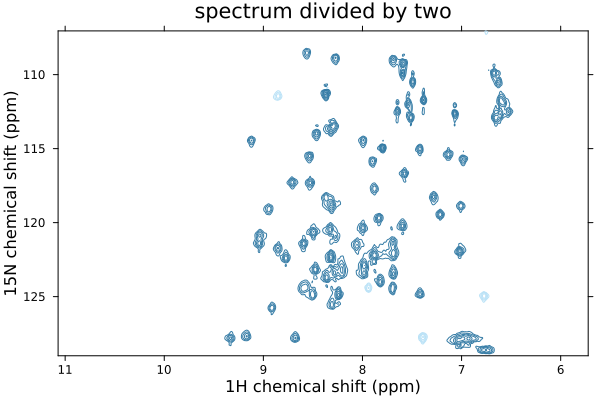

Getting started
Installing NMRTools
Install NMRTools.jl through the Julia package manager:
using Pkg
Pkg.add("NMRTools")The examples in this tutorial also using the Plots package, which can be obtained similarly.
Plot a 1D spectrum
Let's load some example data. This can be a Bruker experiment directory, a specific pdata folder, or an NMRPipe-format file.
using NMRTools, Plots
spec = exampledata("1D_19F")┌ 5000-element NMRData{Float64, 1} ┐
├──────────────────────────────────┴───────────────────────────────────── dims ┐
↓ F1Dim Sampled{Float64} LinRange{Float64}(-119.5922, -124.16252020246354, 5000) ReverseOrdered Regular Points
├──────────────────────────────────────────────────────────────────── metadata ┤
Dict{Symbol, Any} with 17 entries:
:filename => "/home/runner/.julia/artifacts/8581f841a7ad0ab21edeb8fd0…
:label => "Example 19F 1D spectrum"
:ns => 64
:format => :pdata
:noise => 424.03
:solvent => "H2O+D2O"
:temperature => 318.151
:nuclei => Set(Nucleus[F19])
:experimentfolder => "/home/runner/.julia/artifacts/8581f841a7ad0ab21edeb8fd0…
:pulseprogram => "zg"
:ndim => 1
:acqusfilename => "/home/runner/.julia/artifacts/8581f841a7ad0ab21edeb8fd0…
:title => "Example 19F 1D spectrum\nSample details in second line\…
:topspin => v"3.2.0"
:acqus => Dict{Symbol, Any}(:fcuchan=>Dict(0=>0, 4=>0, 5=>0, 6=>0,…
:date => DateTime("2017-08-07T07:08:12")
:rg => 76.02
└──────────────────────────────────────────────────────────────────────────────┘
⋮ ⋱ NMRTools contains Plots recipes for common types of spectrum. To plot our 1D spectrum, we just use the plot command:
plot(spec)
We could zoom in on a particular region using the usual xlims arguments from Plots, but we can also select a chemical shift range from the data directly. To do this, we use square brackets [...] to access the data like an array, but use the .. selector to specify our chemical shift range:
plot(spec[-124.5 .. -123])
All plots can be saved as high quality vector graphics or png files, using the savefig command:
savefig("myspectrum.pdf")Plot a 2D spectrum
Two-dimensional spectra can be plotted in exactly the same way as for 1Ds.
spec = exampledata("2D_HN")
plot(spec)
Contour levels are set to five times the noise level. The most convenient way to adjust this is simply to multiply or divide the spectrum by some scaling factor. You can also adjust the title - by default taken from the spectrum label - using the title keyword. Use an empty string (title="") to remove the title.
plot(spec / 2, title="spectrum divided by two")
Accessing your data
Spectrum data and associated axis information, metadata, etc, is encapsulated in an NMRData structure.
julia> spec = exampledata("1D_19F")┌ 5000-element NMRData{Float64, 1} ┐ ├──────────────────────────────────┴───────────────────────────────────── dims ┐ ↓ F1Dim Sampled{Float64} LinRange{Float64}(-119.5922, -124.16252020246354, 5000) ReverseOrdered Regular Points ├──────────────────────────────────────────────────────────────────── metadata ┤ Dict{Symbol, Any} with 17 entries: :filename => "/home/runner/.julia/artifacts/8581f841a7ad0ab21edeb8fd0… :label => "Example 19F 1D spectrum" :ns => 64 :format => :pdata :noise => 424.03 :solvent => "H2O+D2O" :temperature => 318.151 :nuclei => Set(Nucleus[F19]) :experimentfolder => "/home/runner/.julia/artifacts/8581f841a7ad0ab21edeb8fd0… :pulseprogram => "zg" :ndim => 1 :acqusfilename => "/home/runner/.julia/artifacts/8581f841a7ad0ab21edeb8fd0… :title => "Example 19F 1D spectrum\nSample details in second line\… :topspin => v"3.2.0" :acqus => Dict{Symbol, Any}(:fcuchan=>Dict(0=>0, 4=>0, 5=>0, 6=>0,… :date => DateTime("2017-08-07T07:08:12") :rg => 76.02 └──────────────────────────────────────────────────────────────────────────────┘ ⋮ ⋱
Data can be accessed with conventional array indexing, but also using the value-based selectors, Near and ..:
julia> spec[100:105]┌ 6-element NMRData{Float64, 1} ┐ ├───────────────────────────────┴──────────────────────────────────────── dims ┐ ↓ F1Dim Sampled{Float64} LinRange{Float64}(-119.68271044209722, -119.68728167654656, 6) ReverseOrdered Regular Points ├──────────────────────────────────────────────────────────────────── metadata ┤ Dict{Symbol, Any} with 17 entries: :filename => "/home/runner/.julia/artifacts/8581f841a7ad0ab21edeb8fd0… :label => "Example 19F 1D spectrum" :ns => 64 :temperature => 318.151 :experimentfolder => "/home/runner/.julia/artifacts/8581f841a7ad0ab21edeb8fd0… :pulseprogram => "zg" :ndim => 1 :acqusfilename => "/home/runner/.julia/artifacts/8581f841a7ad0ab21edeb8fd0… :title => "Example 19F 1D spectrum\nSample details in second line\… :acqus => Dict{Symbol, Any}(:fcuchan=>Dict(0=>0, 4=>0, 5=>0, 6=>0,… :format => :pdata :noise => 424.03 :solvent => "H2O+D2O" :nuclei => Set(Nucleus[F19]) :topspin => v"3.2.0" :date => DateTime("2017-08-07T07:08:12") :rg => 76.02 └──────────────────────────────────────────────────────────────────────────────┘ ⋮ ⋱julia> spec[Near(-124)]5808.748229980469julia> spec[-124 .. -123.5]┌ 547-element NMRData{Float64, 1} ┐ ├─────────────────────────────────┴────────────────────────────────────── dims ┐ ↓ F1Dim Sampled{Float64} LinRange{Float64}(-123.50060545419717, -123.99978425606656, 547) ReverseOrdered Regular Points ├──────────────────────────────────────────────────────────────────── metadata ┤ Dict{Symbol, Any} with 17 entries: :filename => "/home/runner/.julia/artifacts/8581f841a7ad0ab21edeb8fd0… :label => "Example 19F 1D spectrum" :ns => 64 :temperature => 318.151 :experimentfolder => "/home/runner/.julia/artifacts/8581f841a7ad0ab21edeb8fd0… :pulseprogram => "zg" :ndim => 1 :acqusfilename => "/home/runner/.julia/artifacts/8581f841a7ad0ab21edeb8fd0… :title => "Example 19F 1D spectrum\nSample details in second line\… :acqus => Dict{Symbol, Any}(:fcuchan=>Dict(0=>0, 4=>0, 5=>0, 6=>0,… :format => :pdata :noise => 424.03 :solvent => "H2O+D2O" :nuclei => Set(Nucleus[F19]) :topspin => v"3.2.0" :date => DateTime("2017-08-07T07:08:12") :rg => 76.02 └──────────────────────────────────────────────────────────────────────────────┘ ⋮ ⋱
This also works for multidimensional data. For example:
julia> spec2d = exampledata("2D_HN")┌ 1216×512 NMRData{Float64, 2} ┐ ├──────────────────────────────┴───────────────────────────────────────── dims ┐ ↓ F1Dim Sampled{Float64} LinRange{Float64}(11.07119, 5.722488424064256, 1216) ReverseOrdered Regular Points, → F2Dim Sampled{Float64} LinRange{Float64}(128.9998, 107.04307400088886, 512) ReverseOrdered Regular Points ├──────────────────────────────────────────────────────────────────── metadata ┤ Dict{Symbol, Any} with 18 entries: :rg => 203 :filename => "/home/runner/.julia/artifacts/278430abd2b28a265273e7074… :label => "13C,15N ubiquitin" :ns => 2 :format => :pdata :noise => 502.842 :solvent => "H2O+D2O" :temperature => 276.999 :nuclei => Set(Nucleus[H1, N15]) :experimentfolder => "/home/runner/.julia/artifacts/278430abd2b28a265273e7074… :pulseprogram => "sfhmqcf3gpph.cw" :ndim => 2 :acqusfilename => "/home/runner/.julia/artifacts/278430abd2b28a265273e7074… :title => "13C,15N ubiquitin\n500 uM in 10% D2O, 20 mM Pi pH 6.5, … :topspin => v"6.0.0" :acqus => Dict{Symbol, Any}(:fcuchan=>Dict(0=>0, 4=>0, 5=>0, 6=>0,… :acqu2s => Dict{Symbol, Any}(:origin=>nothing, :sw=>21.9971, :sw_h=… :date => DateTime("2019-11-20T19:41:09") └──────────────────────────────────────────────────────────────────────────────┘ ⋮ ⋱julia> spec2d[8.1 .. 8.3, Near(124)]┌ 45-element NMRData{Float64, 1} ┐ ├────────────────────────────────┴─────────────────────────────────────── dims ┐ ↓ F1Dim Sampled{Float64} LinRange{Float64}(8.297789182848133, 8.10409134799943, 45) ReverseOrdered Regular Points ├──────────────────────────────────────────────────────────────────── metadata ┤ Dict{Symbol, Any} with 18 entries: :filename => "/home/runner/.julia/artifacts/278430abd2b28a265273e7074… :label => "13C,15N ubiquitin" :ns => 2 :temperature => 276.999 :experimentfolder => "/home/runner/.julia/artifacts/278430abd2b28a265273e7074… :pulseprogram => "sfhmqcf3gpph.cw" :ndim => 2 :acqusfilename => "/home/runner/.julia/artifacts/278430abd2b28a265273e7074… :title => "13C,15N ubiquitin\n500 uM in 10% D2O, 20 mM Pi pH 6.5, … :acqus => Dict{Symbol, Any}(:fcuchan=>Dict(0=>0, 4=>0, 5=>0, 6=>0,… :format => :pdata :noise => 502.842 :solvent => "H2O+D2O" :nuclei => Set(Nucleus[H1, N15]) :topspin => v"6.0.0" :acqu2s => Dict{Symbol, Any}(:origin=>nothing, :sw=>21.9971, :sw_h=… :date => DateTime("2019-11-20T19:41:09") :rg => 203 └──────────────────────────────────────────────────────────────────────────────┘ ⋮ ⋱
A plain array of data for the spectrum can be obtained from this using the data command:
julia> data(spec)5000-element Vector{Float64}: 4671.5184326171875 4675.192687988281 4679.9979248046875 4685.8551025390625 4692.506896972656 4699.526428222656 4706.362731933594 4712.417419433594 4717.134460449219 4720.0810546875 ⋮ 5900.0340576171875 5896.165588378906 5891.2984619140625 5885.714294433594 5879.7239990234375 5873.638427734375 5867.738952636719 5862.253173828125 5857.3370361328125
Similarly, a plain vector containing axis values can be obtained from this using the data command, passing an additional argument to specify the dimension. This can either be a number or the axis type, e.g. F1Dim:
julia> data(spec, 1)5000-element LinRange{Float64, Int64}: -119.592, -119.593, -119.594, -119.595, …, -124.161, -124.162, -124.163